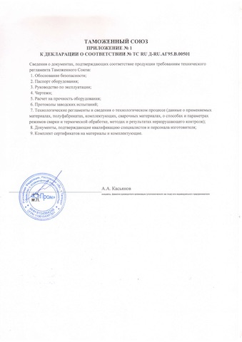

Компания ООО "ЮгПром"

Краткие сведения
- Полное название: Общество с ограниченной ответственностью "ЮгПром"
- Год основания: 2009
- Основной вид деятельности: Тяжелое машиностроение. Изготовление соединительных деталей трубопроводов.
- Продукция: Тройники, кольца и трубные узлы для транспортировки нефти, газа, воды и химикатов.
- Местоположения: г. Таганрог, пл. Северная 3-19, Ростовская область, Российская федерация, 347930
- Количество сотрудников: 120 человек
- Техническая документация: 14 разработанных Техниеских Условий, 3 патента на изобретеня в области машиностроения
- Разрешительная документация: Декларации и сертификаты о соответствии Требованиям Технического Регламента Таможенного союза "ТР ТС 032", заключения Промышленной безопасности, Лицензии, Заключения отраслевых институтов
- Руководство: Дружная команда профессионалов и новаторов с прагматичным, но в то же время творческим подходом к производству.
Информация о заводе
ООО «ЮгПром» - высоко специализированное предприятие, основано в 2009 году. Основной деятельностью является изготовление соединительных деталей трубопроводов DN200-DN1400 (Тройники, Кольца переходные). В 2010 году впервые получен сертификат соответствия СМК предприятия требованиям международного стандарта ISO 9001. В 2011 году, по результатам технических аудитов представителями ООО «Газпром ВнииГаз» и ОАО «Газпром», предприятие вошло (и находится по сей день) в реестр трубной продукции ПАО «Газпром». За всё время работы ООО «ЮгПром» зарекомендовало себя как надёжного поставщика качественной продукции и отзывчивых компаньонов. Клиентами предприятия стали предприятия нефте- газовой отрасли различных масштабов, среди которых ПАО «Газпром», ОАО «АК»Транснефть», ОАО «НК»Роснефть». Руководство ООО «ЮгПром» осознает, что качество продукции и соответствие её требованиям стандарта СТО Газпром 9001, является залогом успеха в современных условиях конкуренции.
Предприятие разработало уникальные методы изготовления тройников и официально закрепило за собой авторство в Федеральном институте промышленной собственности (патенты на изобретение №№ 2410180, 2481168, 2492951 – далее патенты). Серийное производство построено на методе Горячей штамповки, описанном в патентах.
Организация располагается на участке, площадью 3200 кв. метров. В собственности находятся производственный цех, Административно-бытовой комплекс и прилегающие территории. Процесс производства полностью происходит на наших площадях и нашими силами. На предприятии на сегодняшний день работает 119 человек, из которых рабочий персонал составляет - 76 человек, ИТР - 23 человек и административный персонал - 20 человека.
Изделия производятся из стальных листов и труб, на основе межотраслевых стандартов, по требованиям и пожеланиям заказчиков. Технологические процессы разрабатываются по Техническим Условиям на продукцию. Технические Условия соответствуют требованиям Технических Регламентов Таможенного Союза. Все процессы производства выполняются без субподрядчиков, под постоянным контролем со стороны служб качества.
Руководство уделяет особое внимание безопасности персонала, пожарной безопасности производства, экологичности процессов, а также психологической атмосфере в коллективе.
Оборудование работает исправно и подвергается периодической проверке и, при необходимости, ремонту, специальным подразделением в составе организации. Персонал обучен, и проходит периодическую переаттестацию. Приборы и мерительные инструменты проходят периодическую поверку и калибровку в федеральных метрологических центрах. В составе предприятия имеются аттестованные Лаборатории Неразрушающего контроля и Механических испытаний.
Служба качества предприятия следит за работой процессов, описывает и корректирует их работу. В 2018 году предприятие получило сертификат СМК, по требованиям СДС «Интергазсерт» (Сертификат № ОГН3.RU.1402.K00030) и стандарта «СТО Газпром 9001-2012». Был успешно пройден аудит на соответствие требованиями Международного стандарта ISO 9001-2015, о чем свидетельствует сертификат (№ РОСС.RU ИФ26.K00082).
Предприятие имеет опыт производства и предлагает услуги по изготовлению телескопических масштабируемых Гидравлических цилиндров, на давление свыше 100 атм., и равным толкающим усилием на всех ступенях работы.
Предприятие имеет опыт работы и готово сотрудничать в части постановки производства (проектирование, авторский надзор, шеф-монтаж, пуск, наладку) по изготовлению соединительных деталей трубопроводов.
Так же имеем опыт изготовления оборудованию по термической обработке деталей, горячей штамповки деталей, автоматизированной резке, газо-воздушного (турбинного) нагрева, уникальной технологической оснастки, автоматизации оборудования механической обработки. Готовы предложить свои услуги и сотрудничество по указанным направлениям.
Предприятие действует на основании и в соответствии с требованиями законодательных, правовых, нормативных и технических актов, и конституции РФ.
Пролукция
Компания производит тройники средних и больших диаметров (DN 200-1400) из сталей различных марок.

Так же производим тройники с решетками и различными полимерным покрытиями


Раскрытие информации
Сертификаты

Декларации и сертификаты соответствия Техническим требованиям Таможенного Союза
Котактная информация
- Адрес: Россия, г. Таганрог, пл. Северная 3-19, 347930
- Телефон: +7 8534 341-881
- Электронная почта: info@ugprom.biz